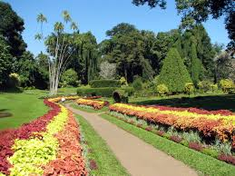
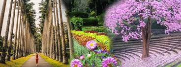
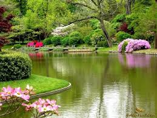

Peradeniya Botanical Garden
 
Royal Botanic Gardens, Peradeniya are about 5.5 km to the west of the city of Kandy in the Central Province of Sri Lanka. In 2016,
the garden was visited by 1.2 million locals and 400,000 foreign visitors.
It is near the Mahaweli River (the longest river in Sri Lanka).
It is renowned for its collection of orchids.
The garden includes more than 4000 species of plants, including orchids, spices, medicinal plants and palm trees.
Attached to it is the "National Herbarium of Sri Lanka".
The total area of the botanical garden is 147 acres (0.59 km2), at 460 meters above sea level, and with a 200-day annual rainfall.
It is managed by the Department of national botanic gardens.
The origins of the Botanic Gardens date as far back as 1371 when King Wickramabahu III ascended the throne and kept court at Peradeniya near the Mahaweli river.
This was followed by King Kirti Sri and King Rajadhi Rajasinghe. A temple was built on this location by King Wimala Dharma,
but it was destroyed by the British when they were given control over the Kingdom of Kandy.
Thereafter, the groundwork for a botanical garden was formed by Alexandar Moon in 1821.
He used the garden for coffee and cinnamon plants.
The Botanical Garden at Peradeniya was formally established in 1843 with plants brought from Kew Garden,
Slave Island, Colombo, and the Kalutara Garden in Kalutara. The Royal Botanic Garden,
Peradeniya was made more independent and expanded under George Gardner as superintendent in 1844.
On Gardner's death in 1849 George Henry Kendrick Thwaites became superintendent. He served until he resigned in 1879,
when he was succeeded by Henry Trimen, who served until 1895. He was succeeded in turn by John Christopher Willis who served as director from 1898 until 1912.
There are avenues in the River Drive such as Cook's Pine Avenue, Palmyra Palm Avenue, Double Coconut Avenue, Cabbage Palm Avenue, and Royal Palm Avenue.
The classical Avenue of Palms is in this Garden.
One item with a significant history is the Cannonball Tree planted by King George V of the United Kingdom and Queen Mary in 1901.
It is often laden with fruit, which are thought to resemble cannonballs.
 Location (Peradeniya Botanical Garden)